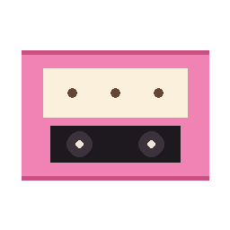

CandyVcr
Record + replay sugar-core sessions — and render .tape to GIF

candy-vcr records a terminal session as a cassette and plays it back. It tees every message and every byte a sugar-core Program emits into a cassette file, then drives a fresh Program through the same cassette and asserts the output matches, either byte for byte with ByteAssertion or cell by cell with ScreenAssertion (powered by sugar-vterm). The same frame pipeline also compiles .tape scripts, the terminal-recording DSL of charmbracelet/vhs, into themed animated GIFs. It is a PHP 8.3+ port, so you can record in CI and render demos with no Docker and no Go toolchain.
Install
composer require sugarcraft/candy-vcrThe library requires ext-mbstring. Rendering a tape needs ext-gd, or ext-imagick with --backend=imagick. The default GIF encoder calls ffmpeg on your PATH, and --encoder=php is a pure-PHP fallback that needs no external binary. The YAML cassette format suggests symfony/yaml.
The binary is vendor/bin/candy-vcr after a project install. With a PHAR or a global Composer install it is simply candy-vcr on PATH. Every subcommand responds to -h with its own usage block, and --version prints the version.
Quickstart
Inspect, summarise and replay the cassette that ships in the repository. Nothing is recorded in this step.
php bin/candy-vcr inspect examples/cassettes/counter.cas
php bin/candy-vcr stats examples/cassettes/counter.cas
php bin/candy-vcr replay examples/cassettes/counter.casThe inspect command prints one line per event. Its output on this cassette is:
cassette v1 80x24 runtime=sugarcraft/candy-vcr@dev created=2026-05-09T03:55:02Z duration=0.030s events=6
------------------------------------------------------------------------
t=0.001s output 8 bytes .[?2027h
t=0.001s resize 80x24
t=0.002s input 3 bytes abc
t=0.003s output 66 bytes .[?2026h.[1;1H.[0Jcounter: 6.. press an...
t=0.030s quit
t=0.030s output 8 bytes .[?2027l
6 / 6 event(s) shownThe replay command writes only the recorded bytes to stdout, so its output can be compared with cmp. It prints a one-line summary to stderr. On this cassette the stdout is counter: 6 followed by press any key, q to quit, and the summary reads candy-vcr replay: played 6 of 6 events (82 output bytes, 0.030 s of recorded time).
Now record your own session from PHP. The Recorder writes the cassette while the program runs:
use SugarCraft\Core\Program;
use SugarCraft\Vcr\Recorder;
// $model is any sugar-core Model. examples/record.php ships a tiny CounterModel.
$program = new Program($model);
$program->setRecorder(Recorder::open('/tmp/session.cas'));
$program->run();
// The cassette closes when the run loop ends. A crash still flushes it.Read the cassette back in PHP with a format reader:
use SugarCraft\Vcr\Format\JsonlFormat;
$cassette = (new JsonlFormat())->read('/tmp/session.cas');
foreach ($cassette->events as $event) {
echo $event->kind->value, ' @ ', $event->t, "\n";
}Concepts
A cassette is a file with one header and a list of events. The header carries the terminal size, a runtime stamp, a theme, a timestamp mode and an optional environment capture. Each event has a time t and a kind from EventKind: Resize, Input, Output, Quit, Snapshot, Hide or Show. The default format is JSON Lines, one event per line, so a cassette can be diffed, grepped and edited by hand.
The Recorder sits inside the Program and tees four streams: the input bytes, the output bytes (renderer, raw, print and cursor, title and mode messages), resize events and the quit event. The Player reads a cassette and drives a fresh Program through it. Its instant mode is for fast tests, and its realtime mode follows the recorded cadence for demos.
An assertion decides whether a replay matched. ByteAssertion demands byte-equal output and prints a hex and printable diff from the first divergent offset. ScreenAssertion compares cell grids through sugar-vterm, so it tolerates reordered escape sequences, redundant SGR, equivalent cursor moves and partial repaints. Prefer ScreenAssertion for round-trip tests.
Recording is explicit. candy-vcr never watches a terminal by itself. A cassette holds exactly what the Program was given, and it can hold secrets, so the file is created with mode 0600.
The tape pipeline is a separate path. A .tape file is compiled through Lexer, Parser and Compiler, played by a Player into a virtual terminal, sampled into frames by Renderer and FrameStream, thinned by FrameDedup, rasterised by the GD or imagick backend, and encoded into a GIF. A tape is a source file, not a cassette, so a recorded cassette cannot be exported to GIF today.
Timestamp modes
Cassettes use one of two timestamp modes. Absolute mode writes t, the time since the start of the run, on every event. Relative mode writes dt, the delay since the previous event, in the style asciinema casts use, which is easier to edit by hand. Choose relative mode by opening the recorder with a header that sets timestampMode to CassetteHeader::TIMESTAMP_MODE_RELATIVE. Recorder::withFormat() only confirms the encoding that the header already chose, and it throws on a mismatch rather than switching.
use SugarCraft\Vcr\CassetteHeader;
use SugarCraft\Vcr\Format\RelativeFormat;
use SugarCraft\Vcr\Recorder;
$header = new CassetteHeader(
version: 1,
createdAt: '2026-05-07T10:00:00Z',
cols: 80,
rows: 24,
runtime: 'sugarcraft/candy-vcr@dev',
timestampMode: CassetteHeader::TIMESTAMP_MODE_RELATIVE,
);
$recorder = Recorder::open('/tmp/session.cas', $header)->withFormat(new RelativeFormat());Gzip and asciinema
A name ending in .cas.gz selects the gzip codec, CompressedJsonlFormat, without sniffing the content. AsciinemaFormat reads .cast files in asciinema v2 and v3 format, so a recording made with asciinema can be replayed. It is a read-only importer with no writer.
Tasks and how-to
Record a real program from the command line
The record subcommand spawns the command in a pseudo-terminal and captures all of its input and output. It refuses to overwrite an existing cassette unless you pass --force.
candy-vcr record --output session.cas --cols 132 --rows 40 -- bash -l
candy-vcr record --output hello.cas --no-ctty -- /bin/echo 'hello'
candy-vcr record --output shell.cas --shell # spawn $SHELL -l
candy-vcr record --output demo.cas --idle-trim 1.0 -- bash demo.shReplay a cassette in a regression test
Load the cassette, wire the three streams into the Program, and assert the frames. Any divergence is reported as a diff.
use SugarCraft\Core\Program;
use SugarCraft\Core\ProgramOptions;
use SugarCraft\Vcr\Assert\ScreenAssertion;
use SugarCraft\Vcr\Player;
use App\MyModel;
$result = Player::open('/tmp/session.cas')->play(
programFactory: fn ($input, $output, $loop) => new Program(
new MyModel(),
new ProgramOptions(input: $input, output: $output, loop: $loop),
),
assertion: new ScreenAssertion(80, 24),
);
if (!$result->ok) {
echo $result->diffSummary();
exit(1);
}Replay with a time budget
Realtime replay follows the recorded pauses. Use --idle-trim to clamp any pause longer than N seconds, or --no-trim to keep the original timestamps.
candy-vcr replay session.cas --speed=realtime
candy-vcr replay session.cas --speed=realtime --idle-trim=1.0
candy-vcr replay session.cas --no-trimCompare two cassettes and migrate an old one
diff compares two cassettes event by event. It matches the header fields, then the event kinds, payloads and timestamps within 2 ms. migrate rewrites a cassette in the current format. Use --dry-run to validate first, and --info to list the registered migrators.
candy-vcr diff a.cas b.cas
candy-vcr migrate session.cas upgraded.cas --dry-run
candy-vcr migrate session.cas upgraded.casRender a tape to a GIF
A tape is a short script of directives. The .vhs/smoke.tape file in the repository types a command and waits two seconds. Its compiled event stream is the first thing to check, using --dry-run, which prints one JSON line per event and writes no GIF.
php bin/candy-vcr render-tape --dry-run .vhs/smoke.tape
php bin/candy-vcr render-tape -o smoke.gif -t Dracula --fps 24 .vhs/smoke.tape
php bin/candy-vcr render-batch -r -j 4 -o out/ demos/The first command prints the header and the first events of the compiled tape, starting like this:
{"_header":{"v":1,"cols":66,"rows":5,"runtime":"SugarCraft/Vcr","theme":"TokyoNight","typingSpeed":50,"timestampMode":"absolute","env":[],"eventCount":56,"duration":4.749999999999998}}
{"t":0,"kind":"input","payload":{"b":"p"}}
{"t":0.05,"kind":"input","payload":{"b":"h"}}
{"t":0.1,"kind":"input","payload":{"b":"p"}}Run real program output inside a GIF
By default a tape only replays its keystrokes. Add Set Shell "bash" to the tape, or pass --shell=SHELL or --exec on the command line, and the renderer runs the typed commands in a real pseudo-terminal and captures their output. The next section explains the risk.
Keys and input
candy-vcr binds no keys of its own. A recording captures the keystrokes the user types and the bytes they produce, unchanged. Replay sends the recorded input back into the Program, and it never interprets key names.
Under record, the recorded child gets a controlling terminal by default, so Ctrl+C reaches the program inside the session. Pass --no-ctty for a non-interactive command, and Ctrl+C will not reach it. The host terminal settings are restored on every exit path, including a thrown exception.
In a tape, Type, Enter, Sleep and the other directives stand in for keys. The compiled events carry the same keystroke bytes that a live session would produce.
Theming and rendering
GIF output takes a theme for its colours. The five shipped themes are TokyoNight (the default), TokyoNightLight, TokyoNightStorm, Dracula and SolarizedDark. A tape selects one with Set Theme "TokyoNight", and the --theme flag overrides it.
The font is JetBrainsMono, which ships in the fonts/ directory under the SIL Open Font License, and the DejaVu Sans Mono faces are bundled too. Pass --font to name a different installed family. The frame rate defaults to 30 frames per second, and FrameDedup collapses identical adjacent frames, which typically removes 80 to 95 per cent of a recording.
Replay itself is environment-blind. It streams the recorded bytes verbatim, so it does not read NO_COLOR, does not degrade on TERM=dumb and does not follow live resizes. The completion summary goes to stderr, so a stdout capture stays byte-clean.
Configuration
The CLI has eight subcommands. Each takes its options after the verb, and each prints its own usage with -h.
| Subcommand | Purpose |
|---|---|
record | Record a command's pseudo-terminal session into a cassette. |
inspect | List the events of a cassette. --frames lists frames instead. |
replay | Stream a cassette's recorded output to stdout. |
diff | Compare two cassettes event by event. |
stats | Summarise a cassette: event counts, duration and output bytes. |
migrate | Rewrite a cassette in the current format. |
render-tape | Render one .tape file to a GIF. |
render-batch | Render every .tape file in a directory. |
record options
| Option | Default | Effect |
|---|---|---|
--output PATH | session-<timestamp>.cas | The cassette to write. |
--force | off | Replace an existing output file. Without it, record refuses with exit code 2. |
--cols N, --rows N | 80 by 24 | The initial terminal size. |
--no-ctty | off | Spawn without a controlling terminal, so Ctrl+C does not reach the program. |
--shell | off | Spawn $SHELL -l, or /bin/sh -l. It cannot be combined with a command. |
--env | off | Capture the host environment into the header, with secret-looking keys stripped. |
--env-regex=PATTERN | a conservative secret pattern | Replace the secret filter. An empty pattern is rejected. Implies --env. |
--env-all | off | Dangerous. Capture the full environment with no filtering, and print each variable name to stderr. The old name --env-allow-secrets is a legacy alias. |
--idle-trim N | off | Compress any gap longer than N seconds in the recording. |
replay options
| Option | Default | Effect |
|---|---|---|
--speed=instant|realtime | instant | Replay as fast as possible, or honour the recorded cadence. |
--idle-trim=N | off | Clamp any pause longer than N seconds during replay. |
--no-trim | off | Use the original timestamps, even if the header asks for trimming. |
render-tape and render-batch options
| Option | Default | Effect |
|---|---|---|
-o, --output | the input name with .gif | The output GIF path. render-batch takes --output-dir for the directory instead. |
-f, --font | JetBrainsMono | The TTF font family. |
-t, --theme | TokyoNight | One of the five shipped themes. |
--fps | 30 | Frames per second. |
-b, --backend | gd | gd or imagick. |
-e, --encoder | ffmpeg | ffmpeg or the pure-PHP php encoder. |
--strict | off | Fail on an unknown directive instead of skipping it. |
--shell=SHELL, --exec | off | render-tape only. Run typed commands in a real pseudo-terminal, with the given shell or the default one. |
--dry-run | off | render-tape only. Print the compiled event stream and write no GIF. |
-r, --recursive, -j, --jobs | off, 1 | render-batch only. Search subdirectories, and render tapes in parallel. |
API reference
The public types live in the SugarCraft\Vcr\ namespace. The table lists the methods a caller most often needs.
| Class | Method | Description |
|---|---|---|
| Recorder | open(path, header) | Opens a cassette for recording. The file is created with mode 0600. |
| Recorder | withFormat(format) | Confirms the timestamp encoding the header chose. It throws on a mismatch and never switches. |
| Recorder | withHook(hook) / withIdleTrim(threshold) | Adds a recording hook, or compresses long idle gaps while recording. |
| Recorder | close() | Closes and finalises the cassette. |
| Player | open(path) | Opens a cassette for replay. It sniffs the first event for the timestamp mode, and a .gz name selects the gzip codec. |
| Player | loadAny(path) | Loads by extension: .cast, .yaml, .tape, .gz, .cas, .jsonl or .cassette. Unknown extensions are content-sniffed. |
| Player | withIdleTrim(?float) | Sets the idle-gap threshold for realtime playback. |
| Player | play(factory, assertion) | Replays the session into a fresh Program and returns a ReplayResult. |
| ReplayResult | $ok, $diff, diffSummary() | The verdict, the assertion diff, and a printable summary. |
| ByteAssertion | new() | Strict byte equality with a hex and printable diff window. |
| ScreenAssertion | new(cols, rows) | Cell-grid equality through sugar-vterm. |
| Format\Format | read(path), write(cassette, path), encode(), decode() | The codec interface. Implementations are JsonlFormat, CompressedJsonlFormat, RelativeFormat and YamlFormat. AsciinemaFormat reads only. |
| Format\CassetteLoader | load(path), isTape(path) | Loads a cassette or a tape source, and reports which. |
| Cassette | $header, $events, eventCount(), duration() | The immutable cassette value object. |
| Event | $t, $kind, payload | One recorded line. The kind is an EventKind case. |
| Render\Renderer | render(player, terminal, fps) | Produces a FrameStream of snapshots at a fixed cadence. |
| Render\FrameDedup | dedup(stream) | Collapses identical adjacent frames. |
| Encode\TapeToGif | new(options), then render(tapePath, outputPath, options) | Runs the full tape-to-GIF pipeline with the theme, fps, backend and encoder options. |
| RelativeFormat | new() | The delta-time format, used by asciinema casts. |
The CLI verbs are command classes such as RecordCommand, ReplayCommand and RenderBatchCommand, and DiffWriter prints the output of diff. Each one wraps the library types listed above, so a script can call those types directly and skip the CLI.
Only methods declared in candy-vcr/src, or inherited from a parent declared there, are listed. A type that extends a class outside that tree, such as \RuntimeException, does not show the methods of that class.
SugarCraft\Vcr
Cassette final class
Header + ordered event list. Format-agnostic value object — JsonlFormat / YamlFormat read and write this same shape.
| Method | Summary |
|---|---|
__construct(CassetteHeader $header, iterable $events, ?float $endTime = null) | |
eventCount(): int | |
header(): CassetteHeader | |
duration(): float |
CassetteHeader final readonly class
First line of a cassette. Carries the format version, recording dimensions, the runtime that produced the cassette, and the wall-clock creation time (informational — Player ignores it).
| Method | Summary |
|---|---|
__construct(public int $version, public string $createdAt, public int $cols, public int $rows, public string $runtime, public string $timestampMode = self::TIMESTAMP_MODE_ABSOLUTE, public array $env = [], public ?float $typingSpeed = null, public ?string $theme = null, public ?float $playbackSpeed = null, public ?int $fontSize = null, public ?string $fontFamily = null, public ?int $widthPx = null, public ?int $heightPx = null) | |
toWireArray(): array | Canonical wire representation of every header field, defaults omitted. |
withVersion(int $version): self | Derivation changing ONLY the version stamp; every other field (timestampMode, env, theme, typing speed, font and pixel geometry included) rides through untouched. Migration must not forget where a recording came from. |
Event final readonly class
One row of a cassette: a kind, a payload, and a timestamp in seconds since cassette start.
| Method | Summary |
|---|---|
__construct(public float $t, public EventKind $kind, public array $payload) |
EventKind enum
SugarCraft-original event vocabulary; only the cassette idea is inspired by charmbracelet/x/vcr (which records HTTP pairs, not keystrokes).
Cases: Resize · Input · Output · Quit · Snapshot · Hide · Show
PHP also provides cases(), from() and tryFrom().
Lang final class
Per-library translation facade for candy-vcr.
Player final class
Drive a sugar-core Program through a recorded Cassette, then compare the program's actual output against the cassette's recorded output via an Assertion.
| Method | Summary |
|---|---|
__construct(public readonly Cassette $cassette, private readonly ?float $idleTrimSeconds = null) | |
static open(string $path): self | |
static loadAny(string $path): self | Like open() but auto-detects the file kind in addition to the cassette serializer: a .tape file (VHS DSL) is compiled to a Cassette via Lexer → Parser → Compiler; a .cas/.jsonl/.cast/ .yaml/.yml file is read through the matching Format. |
withIdleTrim(?float $seconds): self | Fluent setter for idle-trim threshold. When set, delays between consecutive events that exceed $seconds are clamped to $seconds during SPEED_REALTIME playback. Has no effect in SPEED_INSTANT mode. |
play(\Closure $programFactory, ?Assertion $assertion = null, int $speed = self::SPEED_INSTANT, ?Registry $serializerRegistry = null, ?float $timeoutSeconds = null, bool $skipFirstResize = true, ?EventMatcher $matcher = null, ?float $idleThresholdSeconds = null, bool $useRawTimestamps = false, ?LoopInterface $loop = null): ReplayResult | Drive programFactory through the cassette and assert the output matches the recording. |
Recorder final class
Streaming JSONL cassette writer. Events are encoded line-by-line and flushed through coalescing doors (finding 113): every FLUSH_EVENT_THRESHOLD events, once FLUSH_BYTE_THRESHOLD bytes have accumulated, or immediately after any event whose inter-event gap exceeded FLUSH_IDLE_GAP_SECONDS. A live interactive session is idle-bound, so the practically relevant crash window is one event; a process killed mid-burst may lose up to the last unflushed door window (fewer than the thresholds of events / bytes) — the bounded cost the per-keystroke-fflush ruling accepted. The header line and everything before close() are always flushed.
| Method | Summary |
|---|---|
__construct($fh, CassetteHeader $header, ?float $startTime = null, ?HookRegistry $hooks = null) | |
static open(string $path, ?CassetteHeader $header = null): self | Open a cassette file at the given path for writing. Convenience factory — fills in a sensible CassetteHeader (cols=80, rows=24, current UTC time, candy-vcr runtime tag) when omitted; an initial recordResize event will overwrite the placeholder dimensions. |
static defaultHeader(int $cols = 80, int $rows = 24, string $runtime = 'sugarcraft/candy-vcr@dev'): CassetteHeader | |
withHook(\SugarCraft\Vcr\Hook\Hook $hook): self | Add a hook to be called during recording. |
withIdleTrim(?float $thresholdSec, float $compressedMaxSec = 0.5): self | Enable idle-trim: gaps between consecutive events that exceed $thresholdSec are compressed to $compressedMaxSec, and every event from the first trim onward — not only the trimmed one — carries a tRaw payload with its original (uncompressed) wallclock-relative timestamp while the trim offset is in effect, so a replay can opt back into the real cadence via --no-trim (player flag). This restates the wire format exactly as the encoder gates it (finding 097). |
hooks(): HookRegistry | Get the hook registry for direct manipulation. |
withFormat(Format $f): self | Confirm the timestamp format against the cassette's header. |
recordResize(int $cols, int $rows): void | |
recordInputBytes(string $bytes): void | |
recordOutput(string $bytes): void | |
recordQuit(): void | |
close(): void | |
hookErrors(): array | Hook failures swallowed during recording (finding 096): one entry per afterCapture death, naming the hook and its error. Empty means every registered hook ran clean; non-zero means the tape is fine but a hook (sanitizer, metadata fan-out, ...) silently skipped work the caller believes it did — callers (the record CLI) surface each entry as a warning after close(). Read after close() for the session-complete view. |
captureWriteErrors(): int | Total tape-writing failures this recorder has absorbed (C3): short or failed writes plus failed flushes, including the final close(). Zero means every event the recorder accepted reached the stream. Non-zero means the cassette at this path is INCOMPLETE — callers (the record CLI) must not report an unconditional success over it. |
ReplayResult final readonly class
Outcome of a Player::play() call.
| Method | Summary |
|---|---|
__construct(public bool $ok, public string $diff, public int $eventCount, public int $inputCount, public int $resizeCount, public int $outputCount, public int $quitCount, public bool $programQuitCleanly, public int $undecodedInputCount = 0, public array $undecodedInputAt = []) | |
diffSummary(): string | Human-readable summary suitable for failure messages. |
SugarCraft\Vcr\Assert
Assertion interface
Strategy for comparing replay output against the cassette's recorded output. Implementations decide WHAT counts as "equal" — exact bytes (ByteAssertion), cell-grid screen state (ScreenAssertion via sugar-vterm), or anything else.
| Method | Summary |
|---|---|
compare(string $expected, string $actual): array | Compare the program's actual output to the cassette's expected output. Returns a result envelope: |
ByteAssertion final class
Exact byte-equality check between expected and actual output.
| Method | Summary |
|---|---|
compare(string $expected, string $actual): array |
ContainsAssertion final class
Partial output match assertion.
| Method | Summary |
|---|---|
compare(string $expected, string $actual): array | Compare the actual output to check it contains the expected substring. |
RegexAssertion final class
Pattern-match assertion on output.
| Method | Summary |
|---|---|
__construct(private readonly string $pattern, private readonly bool $multiline = false, private readonly bool $caseInsensitive = false, private readonly bool $dotAll = false) | |
compare(string $expected, string $actual): array | Compare the actual output against the regex pattern. |
ScreenAssertion final class
Cell-grid screen-equality assertion.
| Method | Summary |
|---|---|
__construct(public readonly int $cols = 80, public readonly int $rows = 24) | |
compare(string $expected, string $actual): array |
SugarCraft\Vcr\Cli
Application final class
Subcommand router for bin/candy-vcr. Dispatches to one of the registered DocumentedCommand (or Symfony) implementations based on the first positional arg.
| Method | Summary |
|---|---|
__construct(?array $commands = null) | Every registered verb carries its own usage block, so help <sub> and <sub> --help have one source for every verb. A bare Command is refused here, not at the help door: without a usage() there is no sub-specific answer to give, and a silent global-listing fallback would hide the missing contract. |
run(array $argv, $stdout, $stderr): int | |
static versionString(): string | The --version answer, phar-aware (the version-stamp lesson from candy-code). |
static hostArchive(): string | The real-filesystem path of the phar archive hosting this install, or '' when this code is not running from an archive. |
ChoiceOption final class
Parses a flagged choice option against its closed set of known values.
| Method | Summary |
|---|---|
static parse(mixed $raw, string $flag, array $known, string $default): string |
Command interface
Base shape for bin/candy-vcr subcommands.
| Method | Summary |
|---|---|
run(array $args, $stdout, $stderr): int | Execute the subcommand. Receives positional args (without the leading subcommand name). Writes user-facing output to $stdout and diagnostic / error messages to $stderr. |
summary(): string | One-line description for bin/candy-vcr usage output. |
DiffCommand final class
candy-vcr diff [--strict] <a.cas> <b.cas>
| Method | Summary |
|---|---|
summary(): string | |
usage(): string | |
run(array $args, $stdout, $stderr): int |
DocumentedCommand interface
A subcommand that carries its own usage block.
| Method | Summary |
|---|---|
usage(): string | The verb's usage block, newline-terminated, ready to write. |
run(array $args, $stdout, $stderr): int | Execute the subcommand. Receives positional args (without the leading subcommand name). Writes user-facing output to $stdout and diagnostic / error messages to $stderr. |
summary(): string | One-line description for bin/candy-vcr usage output. |
DualStreamOutput final class
The Application::run() door hands verbs a plain StreamOutput wrapping the caller's stdout — but the machine-readable paths (render-tape --dry-run's JSONL stream) write clean data to stdout and MUST route diagnostics to stderr, and they can only do that through ConsoleOutputInterface. Without a dual implementation the S09 warnings channel quietly died inside the library-embedded CLI (finding 024): the instanceof ConsoleOutputInterface gate in RenderTapeCommand simply never fired through Application::run().
| Method | Summary |
|---|---|
__construct($stdout, $stderr, int $verbosity = self::VERBOSITY_NORMAL) | |
getErrorOutput(): OutputInterface | |
setErrorOutput(OutputInterface $error): void | |
section(): ConsoleSectionOutput |
FpsOption final class
Parses the --fps option at the CLI boundary into a render cadence.
| Method | Summary |
|---|---|
static parse(mixed $raw): ?float |
InspectCommand final class
candy-vcr inspect <cassette|.tape> [--frames] [--since=<seconds>] [--until=<seconds>] [--fps=<n>|--fps <n>]
| Method | Summary |
|---|---|
summary(): string | |
usage(): string | |
run(array $args, $stdout, $stderr): int |
MigrateCommand final class
candy-vcr migrate <input.cas> [output.cas] [--dry-run] [--force]
| Method | Summary |
|---|---|
summary(): string | |
usage(): string | |
run(array $args, $stdout, $stderr): int |
RecordCommand final class
candy-vcr record [--output PATH] [--cols N] [--rows N] [--no-ctty] -- <cmd> [args...]
| Method | Summary |
|---|---|
__construct(private $stdin = null) | |
summary(): string | |
run(array $args, $stdout, $stderr): int | |
static filteredHostEnv(?string $regex = null, bool $captureAll = false): array | Snapshot the current process env, dropping any key that matches the configured secret regex and any value that embeds URL credentials (the CREDENTIAL_VALUE_REGEX second screen). Keys are sorted alphabetically so the cassette diff stays stable across runs. |
static envAllWarning(array $capturedEnv): string | Build the stderr warning emitted whenever --env-all captures the full host environment without secret filtering. Names every captured var so the operator can see exactly which (potentially sensitive) keys landed in the cassette. Pure/static so it can be unit-tested without a live PTY. |
usage(): string | The verb's own help text — also what -h/--help answers with. |
RenderBatchCommand final class
| Method | Summary |
|---|---|
setProcessFactory(?callable $factory): void |
RenderTapeCommand final class
ReplayCommand final class
candy-vcr replay <cassette> [--speed=instant|realtime|--speed instant|realtime] [--idle-trim=N|--idle-trim N]
| Method | Summary |
|---|---|
__construct(?callable $ttyProbe = null, ?callable $sleeper = null) | |
summary(): string | |
usage(): string | |
run(array $args, $stdout, $stderr): int |
StatsCommand final class
candy-vcr stats <cassette>
| Method | Summary |
|---|---|
summary(): string | |
usage(): string | |
run(array $args, $stdout, $stderr): int |
WindowsRecordLoop final class
The record byte loop for native Windows, where the POSIX pump cannot run.
| Method | Summary |
|---|---|
__construct(private readonly \Closure $readInput, private readonly ?\Closure $hostSize = null, private readonly ?\Closure $clock = null) | |
run(MasterPty $master, $stdout, Child $child, Recorder $recorder, int $cols, int $rows): int | Pump until the child exits; returns its exit code. |
static streamInput($stdin): \Closure | A non-blocking reader over a stdin STREAM (pipe or file): a pipe gives only what fstat() reports waiting (PeekNamedPipe on Windows), a file is read straight to EOF. A console stdin wants \SugarCraft\Core\Util\Tty\WindowsConsoleInput instead. |
SugarCraft\Vcr\Diff
DiffWriter final class
Writes annotated diff output in unified diff format to a file.
| Method | Summary |
|---|---|
writeUnifiedDiff(string $path, string $expected, string $actual, int $context = 3): int|false | Write a unified diff to a file. |
buildUnifiedDiff(string $expected, string $actual, int $context = 3): string | Build a unified diff string from expected and actual output. |
writeAnsiDiff(string $expected, string $actual, $output = STDOUT): void | Write a colored ANSI diff suitable for terminal output. |
SugarCraft\Vcr\Encode
FfmpegGifEncoder final class
Default GIF encoder using ffmpeg.
| Method | Summary |
|---|---|
__construct(string $ffmpegBin = self::DEFAULT_FFMPEG_BIN) | |
encode(array $pngPaths, string $outputPath, int $fps = 30, ?array $durations = null): bool | |
isAvailable(): bool | |
name(): string |
GifEncoder interface
Interface for GIF encoders.
| Method | Summary |
|---|---|
encode(array $pngPaths, string $outputPath, int $fps = 30, ?array $durations = null): bool | Encode a sequence of frames into an animated GIF. |
isAvailable(): bool | Check if this encoder is available in the current environment. |
name(): string | Encoder name for display and selection purposes. |
PhpGifEncoder final class
Pure-PHP GIF encoder fallback.
| Method | Summary |
|---|---|
encode(array $pngPaths, string $outputPath, int $fps = 30, ?array $durations = null): bool | |
isAvailable(): bool | |
name(): string |
TapeToGif final class
Canonical pipeline: .tape file → .gif file.
| Method | Summary |
|---|---|
__construct(private Lexer $lexer, private Parser $parser, private Compiler $compiler, private Renderer $renderer, private Rasterizer $rasterizer, private GifEncoder $encoder) | |
static resolveFps(?float $cliFps, ?float $tapeFramerate): float | The single fps precedence ladder (finding 008): explicit caller/CLI value → tape Set Framerate → the 30.0 house default. Public so the door is testable without rendering pixels, and any second render path that appears later can reuse the ladder instead of re-forking it. |
render(string $tapePath, ?string $outputPath = null, array $options = []): string | Render a .tape file to a .gif file. |
warnings(): array | Non-fatal compiler diagnostics from the most recent render() — currently unresolvable / out-of-base Source includes that were skipped under non-strict mode. The CLI surfaces these to stderr so a dropped include is never silent. Empty after a clean render or a strict run (strict mode throws on the first such problem instead). |
static assertBackendAvailable(string $backend, ?callable $extensionLoaded = null): void | Fail loud at the backend-resolution choke when the PHP extension a rasterizer backend needs is not loaded. Without this door a gd-less install reaches new GdRasterizer(...) and dies later inside the first imagecreate() with a plain "Call to undefined function" fatal that names neither the extension nor the remedy; the imagick leg would fatal as a class-not-found on ImagickRasterizer's ext-imagick types. Unknown backends fall through to the gd leg, so they are probed as gd (matching the match() arm they will take). |
static new(array $options = []): self | The default pipeline factory — the shape candy-vcr render-tape builds from. The factory seats agree with the render-time defaults: no fontSize here means Compiler::DEFAULT_FONT_SIZE, the same seat self::render() falls back to for tapes without a Set FontSize, so a bare factory never diverges from the CLI bytes. fps and theme are deliberately not factory options — they are resolved per render from the tape header and render options. |
SugarCraft\Vcr\Format
AsciinemaFormat final class
Import asciinema cast files (.cast) as candy-vcr Cassette objects.
| Method | Summary |
|---|---|
read(string $path): Cassette | Read an asciinema cast file and return a Cassette. |
AtomicFileWriter final class
Atomic file placement shared by every cassette writer (finding 018).
| Method | Summary |
|---|---|
static write(string $path, string $contents, string $subject = 'file'): void | Write bytes into place atomically: temp, 0600, content, rename. |
static writeGzipped(string $path, string $contents, int $compressionLevel, string $subject = 'gzip cassette'): void | Write gzip bytes into place atomically (finding 018: the .cas.gz path previously gzopen()ed the destination directly, so a stream that died mid-deflate left a corrupt archive where the last good recording lived). |
static writeStream(string $path, callable $emit, string $subject = 'file'): void | Streaming variant of self::write(): reserve, restrict to 0600, then hand an open handle to $emit so writers can land one line at a time instead of materialising the whole body first (finding 081 — the same atomic placement and cleanup contract, bytes produced incrementally). |
static writeGzippedStream(string $path, callable $emit, int $compressionLevel, string $subject = 'gzip cassette'): void | Streaming variant of self::writeGzipped(): $emit writes plain bytes into a gzip stream opened on the reserved temp; compression flushes as lines arrive instead of taking a whole string at once. |
static reserve(string $path, string $subject = 'file', ?string $forceSuffix = null): string | Reserve an exclusive temp path in the destination directory and return it — for callers whose bytes are produced by a third party (the GIF encoders) rather than a string in hand. The name keeps the destination's extension because encoders infer their muxer from it. |
static commit(string $tmp, string $dest, string $subject = 'file'): void | Replace the destination ENTRY with the finished temp file, atomically within one filesystem. |
static discard(string $tmp): void | Remove a reserved temp after a failed attempt; a vanished temp is benign. |
CassetteLoader final class
Resolves a path to a Cassette by sniffing the file format.
| Method | Summary |
|---|---|
tapeWarnings(): array | Tape-compile warnings from prior load() calls (empty for pure cassette loads). The CLI verbs are obliged to surface these on stderr — a swallowed warning is how a half-compiled tape played "clean". |
compiledTape(): bool | Whether the most recent load() compiled a tape instead of reading a cassette. |
static writeTapeWarnings(CassetteLoader $loader, $stderr, string $verb): void | Report accumulated tape warnings on a CLI stderr stream, verb-labelled. |
load(string $path): Cassette | Load a cassette from disk, sniffing the format automatically. |
isTape(string $path): bool | Return true when the given path resolves to a tape source rather than a cassette. Mirrors the sniff that load() performs but exposed so callers can pick the right downstream pipeline (e.g. dry-run mode). |
CompressedJsonlFormat final class
Gzip-compressed JSONL cassette format. Wraps JsonlFormat with streaming gzip compression that flushes per-line to maintain streaming semantics.
| Method | Summary |
|---|---|
__construct(private readonly JsonlFormat $inner = new JsonlFormat(), private readonly int $compressionLevel = self::DEFAULT_COMPRESSION_LEVEL, private readonly int $maxExpandedBytes = self::MAX_EXPANDED_BYTES) | |
write(Cassette $cassette, string $path): void | |
read(string $path): Cassette | |
encode(Cassette $cassette): string | |
decode(string $contents): Cassette | |
static isGzipPath(string $path): bool | Check if a path should be treated as gzip based on its extension. |
Format interface
Cassette serializer. Format-specific implementations decide how the value-object tree is laid out on disk; the round-trip contract is that read(write(c)) returns a value-object-equal cassette modulo t rounding documented per format.
| Method | Summary |
|---|---|
write(Cassette $cassette, string $path): void | |
read(string $path): Cassette | |
encode(Cassette $cassette): string | Encode a cassette to a string without writing to disk. Round-trips with decode(). Useful for tests, CLI piping, and in-memory inspection. |
decode(string $contents): Cassette |
JsonlFormat final class
JSONL cassette serializer — one JSON document per line. The first line is the header ({"v":1,"created":...,"cols":...,"rows":...,"runtime":...}); subsequent lines are events whose shape depends on k.
| Method | Summary |
|---|---|
write(Cassette $cassette, string $path): void | |
read(string $path): Cassette | |
encode(Cassette $cassette): string | |
encodeLines(Cassette $cassette): \Generator | One JSONL line per frame (header first), newline NOT included. |
decode(string $contents): Cassette | |
decodeTuples(\Traversable $lines): Cassette | Assemble a Cassette from [lineNumber, text, isTornLast] tuples — the shared shape produced by LineIo (file stream) and self::tuplesFromString() (whole-buffer API). |
RelativeFormat final class
JSONL cassette serializer that uses relative/delta timestamps (dt) instead of absolute timestamps (t). Each event's dt value is the interval in seconds since the previous event; the first event always has dt=0.
| Method | Summary |
|---|---|
write(Cassette $cassette, string $path): void | |
read(string $path): Cassette | |
encode(Cassette $cassette): string | |
encodeLines(Cassette $cassette): \Generator | One dt line per frame (header first), newline NOT included. |
decode(string $contents): Cassette | |
decodeTuples(\Traversable $lines): Cassette | Assemble a Cassette from [lineNumber, text, isTornLast] tuples. |
RestrictsCassettePermissions trait
Shared permission policy for cassette files.
YamlFormat final class
Human-readable YAML cassette format. JSONL is the primary on-disk format (Recorder writes JSONL); YAML is intended for hand-written test fixtures and edits where readability matters more than line-streaming.
| Method | Summary |
|---|---|
__construct() | |
write(Cassette $cassette, string $path): void | |
read(string $path): Cassette | |
encode(Cassette $cassette): string | |
decode(string $contents): Cassette |
SugarCraft\Vcr\Hook
Hook interface
Callback invoked during cassette recording to inspect, modify, or annotate events before they are persisted.
| Method | Summary |
|---|---|
beforeSave(Event $event): ?Event | Called before an event is written to the cassette. |
afterCapture(Event $event): void | Called after an event has been written to the cassette. |
HookRegistry final class
Manages a collection of Hook instances and dispatches them in order.
| Method | Summary |
|---|---|
addHook(Hook $hook): void | Register a hook to be called during recording. |
beforeSave(\SugarCraft\Vcr\Event $event): ?\SugarCraft\Vcr\Event | Invoke all beforeSave hooks on an event, returning the final event. |
afterCapture(\SugarCraft\Vcr\Event $event): void | Invoke all afterCapture hooks for an event. |
hookErrors(): array | |
clear(): void | Remove all registered hooks. |
count(): int |
MetadataHook final class
Hook that injects metadata into the cassette header or adds annotations to events. Useful for CI tracking, test identification, or debugging context.
| Method | Summary |
|---|---|
__construct(array $metadata = []) | |
beforeSave(Event $event): Event | |
afterCapture(Event $event): void |
SanitizingHook final class
Hook that sanitizes event payloads before they are written to the cassette. Useful for removing sensitive data (API keys, tokens) or normalizing content for sharing.
| Method | Summary |
|---|---|
__construct(array $removeKeys = [], array $replacePatterns = []) | |
beforeSave(Event $event): Event | |
afterCapture(Event $event): void |
SugarCraft\Vcr\Input
MouseModeTracker final class
Observes recorded program OUTPUT and tracks which DEC private mouse reporting modes are currently enabled.
| Method | Summary |
|---|---|
__construct() | |
observe(string $outputBytes): bool | Feed recorded output bytes; updates mouse-mode state as DECSET/DECRST sequences complete. Safe to call with stream fragments — in-flight sequences carry across calls. |
reset(): void | Clear all recorded mode state (call at the start of each replay). |
enabled(int $mode): bool | |
legacyReportingActive(): bool | True while any mode that reports mouse bytes in the legacy 3-byte form is on. |
printChar(string $rune): void | |
execute(int $byte): void | |
csiDispatch(int $final, array $params, int $prefix, int $intermediate): void | |
escDispatch(int $final, int $intermediate): void | |
oscDispatch(string $data): void | |
dcsDispatch(int $final, array $params, int $prefix, int $intermediate, string $data): void | |
sosPmApcDispatch(string $kind, string $data): void |
MouseReplayDecoder final class
Decodes recorded raw mouse byte sequences into sugar-core mouse Msgs using the encoding the program actually enabled, as tracked by MouseModeTracker.
| Method | Summary |
|---|---|
static decode(string $bytes, MouseModeTracker $modes): ?MouseMsg |
SugarCraft\Vcr\Matcher
ContentMatcher final class
Strict matcher that requires exact payload equality for same-kind events.
| Method | Summary |
|---|---|
matches(Event $recorded, Event $actual): bool |
EventMatcher interface
Strategy interface for comparing a recorded Event against an actual Event during replay.
| Method | Summary |
|---|---|
matches(Event $recorded, Event $actual): bool | Decide whether $recorded and $actual are equivalent for replay purposes. |
PassthroughMatcher final class
Permissive matcher that only checks event kind.
| Method | Summary |
|---|---|
matches(Event $recorded, Event $actual): bool |
TimingTolerantMatcher final class
Matcher that accepts events of the same kind within a timing window.
| Method | Summary |
|---|---|
__construct(private readonly float $timingTolerance = 0.1) | |
matches(Event $recorded, Event $actual): bool |
SugarCraft\Vcr\Migration
CassetteMigrator interface
Strategy interface for migrating a Cassette from one format version to another. Implementations are discovered and wired by MigrationRunner.
| Method | Summary |
|---|---|
canMigrate(Cassette $cassette): bool | Returns true if this migrator can handle the given cassette. Typically checks the header version. |
migrate(Cassette $cassette, bool $dryRun = false): Cassette | Migrate the cassette to the next version. |
sourceVersion(): int | Source format version number this migrator reads (bare accessor, house no-get law). Returns e.g. 1 for V1ToV2Migrator. |
targetVersion(): int | Target format version number this migrator writes. Returns e.g. 2 for V1ToV2Migrator. |
describe(): string | Get a human-readable description of what this migrator does. |
MigrationResult final readonly class
Value object returned by CassetteMigrator::migrate() that carries the migrated cassette plus metadata about what happened.
| Method | Summary |
|---|---|
__construct(public bool $dryRun, public int $sourceVersion, public int $targetVersion, public array $changes) |
MigrationRunner final class
Orchestrates a chain of CassetteMigrator instances to bring a cassette to the current version or a specified target version.
| Method | Summary |
|---|---|
__construct(?array $migrators = null) | |
migrate(Cassette $cassette, bool $dryRun = false, ?int $maxVersion = null): Cassette | Migrate a cassette to the current version (highest target version registered) or up to (but not past) $maxVersion if specified. |
migrateWithStatus(Cassette $cassette, bool $dryRun = false, ?int $maxVersion = null): array | Migrate and report whether the chain actually reached its cap. |
highestTargetVersion(): int | Highest target version any registered migrator reaches — the cap this build can migrate TO (finding 093: callers must be able to say "this build migrates up to v{max}" instead of guessing "latest"). |
canMigrate(Cassette $cassette): bool | Returns true if the given cassette can be migrated further. |
describeMigrators(): array | Returns a description of all registered migrators. |
register(CassetteMigrator $migrator): void | Register a new migrator. Must be added in source-version order. |
V1ToV2Migrator final class
Migrates cassette format v1 → v2.
| Method | Summary |
|---|---|
canMigrate(Cassette $cassette): bool | |
migrate(Cassette $cassette, bool $dryRun = false): Cassette | |
sourceVersion(): int | |
targetVersion(): int | |
describe(): string | |
static reservedKeyCollisions(Cassette $cassette): int | How many events in $cassette already carry a payload key the v2 stamp reserves (_id on any event, _enc on output events) — i.e. how many pre-existing values migrate() will overwrite. Pure; the CLI consults it only for sub-target versions, where every hit is a real collision. |
SugarCraft\Vcr\Msg
BuiltinSerializer final class
Serializer for the sugar-core Msg classes commonly produced by the input parser. Coverage:
| Method | Summary |
|---|---|
__construct() | |
canEncode(Msg $msg): bool | |
canDecode(array $envelope): bool | |
encode(Msg $msg): array | |
decode(array $envelope): Msg | |
static tags(): array | The set of @type tags this serializer handles. |
JsonableSerializer final class
Catch-all serializer for user Msg classes that implement \JsonSerializable. Encodes the FQCN as @type and the jsonSerialize() result as data.
| Method | Summary |
|---|---|
allow(string ...$classes): self | Permit one or more classes for decoding. Validated at the door: the class must exist, implement Msg AND \JsonSerializable — a typo or a wrong-shape class is refused with a named error rather than discovered mid-replay (or never, which is worse). |
allowedClasses(): array | The allow-listed FQCNs, sorted — inspection seam for hosts and tests. |
canEncode(Msg $msg): bool | |
canDecode(array $envelope): bool | |
encode(Msg $msg): array | |
decode(array $envelope): Msg |
MsgSerializer interface
Encode and decode sugar-core Msgs into the cassette input envelope. The envelope is a JSON-able associative array carrying an @type tag so the Registry can route on read.
| Method | Summary |
|---|---|
canEncode(Msg $msg): bool | True if this serializer can encode the given Msg. |
canDecode(array $envelope): bool | True if this serializer can decode the given envelope (typically a check on @type). |
encode(Msg $msg): array | Encode the Msg into an envelope. The result MUST include an @type key — that is the routing tag for decode(). |
decode(array $envelope): Msg | Decode a previously-encoded envelope back into a Msg. |
Registry final class
Ordered list of MsgSerializers. encode() and decode() walk the list and ask each serializer whether it handles the given Msg / envelope.
| Method | Summary |
|---|---|
register(MsgSerializer $serializer): self | Append a serializer to the list. Returns $this for chaining. |
registerFirst(MsgSerializer $serializer): self | Prepend a serializer to the list, so it is consulted before every already-registered one. Returns $this for chaining. |
encode(Msg $msg): ?array | Encode a Msg into a cassette envelope. Returns null if no registered serializer can handle the Msg. |
decode(array $envelope): ?Msg | Decode an envelope back into a Msg. Returns null if no registered serializer claims the envelope's @type. |
static new(): self | Default registry: BuiltinSerializer first (specific sugar-core Msgs), then JsonableSerializer (catch-all for user Msgs implementing \JsonSerializable — DECODE side allow-listed, see allow()). Order is priority, so anything register() appends lands after both — reach for registerFirst() to give a custom codec precedence over the catch-all. |
allow(string ...$classes): self | The host's opt-in door for user Msg classes: forwards to the registered JsonableSerializer's allow list (finding 034 — the catch-all decodes only what was named here). When no catch-all is registered, one configured for these classes is appended. |
SugarCraft\Vcr\Raster
CellColor final class
The single palette-vs-truecolor decision every rasterizer shares.
| Method | Summary |
|---|---|
static foreground(Cell $cell, Theme $theme): int | Exact 24-bit colour of the cell's own foreground channel: the packed SGR 38;2 value when present, otherwise the Theme palette slot. |
static background(Cell $cell, Theme $theme): int | Exact 24-bit colour of the cell's own background channel — the foreground() twin for SGR 48;2/the bg palette slot. |
static pack(?array $rgb): ?int | Pack a [r, g, b] triple (the shape Cell::fgRgb() returns) into a 0xRRGGBB int, passing a null triple straight through so callers can use ?? $paletteFallback to layer the truecolor-over-palette decision. |
FontLoader final class
Loads TTF font faces from bundled or system directories.
| Method | Summary |
|---|---|
__construct(array $fontDirs = []) | |
load(string $family, float $size, string $style = 'regular'): string | Load a TTF font file path for use with imagettftext(). |
static materializeForGd(string $path): string | Turn a phar font path into a real filesystem path. |
resolve(string $family, string $style = 'regular'): ?string | Resolve a font to its absolute path without throwing. |
lastResolvedPath(): ?string | Returns the path to the last successfully resolved font. |
static systemDirs(): array |
GdRasterizer final class
Default rasterizer using ext-gd.
| Method | Summary |
|---|---|
__construct(private int $fontSize = self::DEFAULT_FONT_SIZE, private string $fontFamily = self::DEFAULT_FONT_FAMILY, ?Theme $theme = null) | |
withTheme(Theme $theme): self | |
withFont(string $fontFamily, ?int $fontSize = null): self | |
setCacheDisabled(bool $disabled): void | Toggle the persistent Glyphs cache for benchmarking. Not part of the public Rasterizer contract — callers use this to measure the cache's impact via scripts/bench-glyph-cache.php. |
cacheStats(): array | |
rasterize(Snapshot $snapshot, int $cellW, int $cellH, ?FontLoader $fonts = null, bool $renderCursor = true): \GdImage |
Glyphs final class
Pre-rendered character tile cache.
| Method | Summary |
|---|---|
__construct(private int $cellW, private int $cellH, private FontLoader $fonts, private string $fontFamily = 'JetBrainsMono', int $fontSize = 14, ?Theme $theme = null) | |
cacheStats(): array | |
cacheSize(): int | Live tiles in the cache. Exposed so tests can assert the hard bound and eviction order without reaching into the store. |
cellWidth(): int | |
cellHeight(): int | |
fontFamily(): string | |
fontSize(): int | |
theme(): Theme | |
tile(string $char, int $fg, int $bg, bool $bold, bool $italic, bool $underline, ?int $fgRgb = null, ?int $bgRgb = null): \GdImage | Get or create a cached tile for (char, fg, bg, bold, italic, underline). |
tileWide(string $char, int $fg, int $bg, bool $bold, bool $italic, bool $underline, ?int $fgRgb = null, ?int $bgRgb = null): \GdImage | Get or create a cached wide-character tile (2x cell width). |
measure(string $char): array |
ImagickRasterizer final class
Alternative rasterizer using ext-imagick.
| Method | Summary |
|---|---|
__construct(private int $fontSize = 14, private string $fontFamily = 'JetBrainsMono', ?Theme $theme = null) | |
__destruct() | |
withTheme(Theme $theme): self | |
withFont(string $fontFamily, ?int $fontSize = null): self | |
setCacheDisabled(bool $disabled): void | Toggle the persistent tile cache for benchmarking. |
cacheStats(): array | |
rasterize(Snapshot $snapshot, int $cellW, int $cellH, ?FontLoader $fonts = null, bool $renderCursor = true): \Imagick |
Rasterizer interface
Interface for Snapshot-to-image rasterizers.
| Method | Summary |
|---|---|
rasterize(Snapshot $snapshot, int $cellW, int $cellH, ?FontLoader $fonts = null, bool $renderCursor = true): \GdImage|\Imagick | Rasterize a terminal Snapshot to an image. |
SugarCraft\Vcr\Render
FrameDedup final class
Collapse identical adjacent frames in a FrameStream.
| Method | Summary |
|---|---|
static dedup(\Traversable $stream, int $holdMax = 300): \Iterator | Wrap a FrameStream, collapsing duplicate adjacent frames. |
FrameStream final class
Iterator of Snapshot frames at fps cadence.
| Method | Summary |
|---|---|
__construct(private Player $player, private Terminal $terminal, private float $fps = 30.0, private ?string $shell = null, private int $maxFrames = self::DEFAULT_MAX_FRAMES, private ?float $maxRuntimeSeconds = null) | |
getIterator(): \Traversable | |
warnings(): array | Collected non-fatal render notices (VCR-COPY-05). The exec→echo fallback used to hit error_log() raw — mid-stream, unstyled, and invisible to a caller that swapped STDOUT for a memory stream. It now rides the warnings channel TapeToGif merges into its own Warning: voice for every consumer that reads them. |
Renderer final class
Orchestrates Player + Terminal to produce a stream of Snapshots at the configured frames-per-second cadence.
| Method | Summary |
|---|---|
render(Player $player, Terminal $terminal, float $fps = 30.0, ?string $shell = null, ?int $maxFrames = null, ?float $maxRuntimeSeconds = null): FrameStream | Drive the player through the terminal, yielding snapshots at fps cadence. |
SugarCraft\Vcr\Support
HostShell final class
Where a shell lives and how to start it, on the host PHP actually runs on.
| Method | Summary |
|---|---|
static onWindows(): bool | |
static fallback(): string | The shell to use when none is configured: %ComSpec% on Windows, /bin/sh elsewhere. |
static isExecutable(string $path): bool | Whether $path names a file this host can execute (on Windows, by PATHEXT extension: PHP's is_executable() says false for .cmd/.bat). |
static isAbsolute(string $path): bool | |
static locate(string $name): ?string | Resolve a bare name to an executable path: the conventional POSIX bin directories, then sugar-core's Locator (PATH, plus every PATHEXT suffix on Windows). Null when nothing is found. |
static interactiveArgs(string $shell, bool $login): array | The flags that start $shell interactive (or as a login shell). cmd.exe is interactive by default and rejects -i; PowerShell takes its own words; every POSIX-style shell (sh, bash, zsh, Git-for-Windows bash) gets -l or -i. |
static windowsSystemEnv(): array | The Windows system variables present in this process, to merge into a child's environment block (empty on other hosts). |
LineIo final class
Streaming line reader for cassette-format decoders (finding 081).
| Method | Summary |
|---|---|
static lines(string $path, string $failureMessage): \Generator | Stream the lines of a plain file. |
static gzLines(string $path, string $failureMessage, int $maxExpandedBytes): \Generator | Stream the lines of a gzip file, with a ceiling on the TOTAL DECOMPRESSED bytes (the amplification guard shared with the old whole-buffer reader: a few KB of gzip can expand to gigabytes, and the door must die with a named error, not with the process). |
ObjectMap final class
Boundary parser for decoded JSON/YAML mappings.
| Method | Summary |
|---|---|
static of(array $data, string $where): array |
Scalars final class
Scalar coercion at the JSON trust boundary.
| Method | Summary |
|---|---|
static int(mixed $value, string $where): int | (int)-identical for every scalar and null; throws on array/object. |
static string(mixed $value, string $where): string | (string)-identical for every scalar and null; throws on array/object. |
static float(mixed $value, string $where): float | (float)-identical for every scalar and null; throws on array/object. |
static bool(mixed $value, string $where): bool | (bool)-identical for every scalar and null; throws on array/object. |
static seconds(mixed $value, string $where): float | Timestamp/duration coercion for the trust doors (findings 001/002): numeric literals and numeric strings only — no silent PHP cast table behind a garbage value. float("abc") === 0.0 would rewrite a corrupt timestamp into a valid frame at t=0, the exact laundering this door forbids; a non-numeric scalar is rejected by name instead. |
SocketPair final class
The address family for stream_socket_pair() on this host.
| Method | Summary |
|---|---|
static domain(): int | |
static open(): array|false | A connected stream pair, or false when the host refuses one. |
SugarCraft\Vcr\Tape
Compiler final class
Compiles a directive AST into a Cassette with events. Mirrors charmbracelet/vhs command dispatch: the tape AST becomes the emitted keystroke stream, directive by directive.
| Method | Summary |
|---|---|
compile(array $ast, string $sourcePath, bool $strict = false): Cassette | |
outputPath(): ?string | Destination path requested by the tape's Output <path> directive, resolved and confined to the tape's own directory. Null when the tape had no Output directive, or when the requested path escaped the tape's directory (in which case the caller should fall back to its own default rather than honor an attacker-controlled traversal path). |
shell(): ?string | Shell requested by the tape's Set Shell "<shell>" directive, or null when the tape sets none. A non-null value opts the render into exec mode (real PTY + captured program output); null keeps the byte-identical echo path. Reflects the most recent compile() call. Mirrors charmbracelet/vhs Set Shell, nine-name validation included — a tape cannot surface an arbitrary executable. |
static cellMetrics(int $fontSize): array | Glyph cell size in pixels for a given font size, used both here (to derive the terminal grid from the pixel image dimensions) and by \SugarCraft\Vcr\Encode\TapeToGif (to size the rasterizer canvas). Kept as the single source of truth so the compiled grid and the rendered canvas always agree — otherwise cols * cellW would not line up with the requested Set Width pixels. |
static parseSource(string $source): array | |
warnings(): array | Non-fatal diagnostics from the most recent compile() — currently unresolvable / out-of-base Source includes skipped under non-strict mode. Empty when the tape compiled cleanly or ran under strict mode (which throws on the first such problem instead of collecting). |
droppedDiagnostics(): array | Content-losing diagnostics from the most recent compile() (see recordDropped()). Under strict mode the run aborts at the first one; a non-strict compile finishes and carries every drop here. |
framerate(): ?float | The tape's Set Framerate if it carried one (finding 008's honoured key), null when the tape stayed silent so the caller's own default keeps its seat. |
Decompiler final class
Reverse of Compiler::compile() — walks a Cassette's events back into tape source text that re-parses to an equivalent Cassette.
| Method | Summary |
|---|---|
decompile(Cassette $cassette): string |
InlineTheme final class
Inline JSON themes for Set Theme {…}.
| Method | Summary |
|---|---|
static looksLikeJson(string $theme): bool | |
static fromJson(string $json): Theme |
Lexer final readonly class
Line-oriented tape tokenizer.
| Method | Summary |
|---|---|
static unescapeValue(string $value): string | Unescape the sequences matchDirective() consumed as escaped pairs: a backslash before a backslash or any quote character carries only the quote's meaning, never its own. Every other backslash run (\t, \x1b) stays two literal bytes — upstream's Go quoting does not expand those inside these strings either, and the old port didn't. |
tokenize(string $source): array |
Parser final readonly class
Recursive-descent parser for tape tokens → AST directives. Mirrors charmbracelet/vhs tape parser.
| Method | Summary |
|---|---|
parse(array $tokens): array |
Token final readonly class
A single token from the lexer. Mirrors charmbracelet/vhs tape token kinds.
| Method | Summary |
|---|---|
__construct(public string $type, public string $value, public int $line) |
SugarCraft\Vcr\Tape\Ast
ArrowDirective final readonly class
Arrow direction directive — Up, Down, Left, or Right. Mirrors charmbracelet/vhs Up/Down/Left/Right commands.
| Method | Summary |
|---|---|
__construct(public string $direction) |
BackspaceDirective final readonly class
Backspace directive — emits the DEL keystroke. Mirrors charmbracelet/vhs Backspace command.
CopyDirective final readonly class
Copy "<text>" — upstream's clipboard-write command. Compiles to the terminal-native OSC 52 clipboard-set sequence, so the keystroke event is real (the same wire a hardware copy produces) and the payload travels base64-confined, never raw. Mirrors charmbracelet/vhs Copy command.
| Method | Summary |
|---|---|
__construct(public string $text) |
CtrlDirective final readonly class
Ctrl+<letter> directive — emits a control character (char code & 0x1F). Mirrors charmbracelet/vhs Ctrl command.
| Method | Summary |
|---|---|
__construct(public string $letter) |
Directive interface
Base interface for all tape directive AST nodes.
EnterDirective final readonly class
Enter directive — emits CR. Mirrors charmbracelet/vhs Enter command.
EnvDirective final readonly class
Env KEY "value" directive — exports environment variables to the child process. Mirrors charmbracelet/vhs Env command.
| Method | Summary |
|---|---|
__construct(public string $key, public string $value) |
EscapeDirective final readonly class
Escape directive — emits ESC. Mirrors charmbracelet/vhs Escape command.
HideDirective final readonly class
Hide directive — hides the terminal cursor or frame capture. Deferred: v2 scope. Mirrors charmbracelet/vhs Hide command.
KeyDirective final readonly class
Named-key directive from upstream's measured command roster: Delete, Insert, PageUp, PageDown, End, ScrollUp, ScrollDown. The Compiler maps each to its xterm sequence (the same shapes sugar-core InputReader decodes back into KeyType cases). Mirrors charmbracelet/vhs Delete/Insert/PageUp/PageDown/End/ ScrollUp/ScrollDown commands.
| Method | Summary |
|---|---|
__construct(public string $key) |
ModifierDirective final readonly class
Bare modifier keyword (Alt / Shift). Upstream's lexer carries these as first-class keywords; here they arm a pending modifier that merges into the NEXT keystroke directive's bytes (Alt = the ESC meta lead sugar-core documents, Shift = the xterm ;2 parameter). A tape that ends with a modifier never applied is reported, never silent (finding 005). Mirrors charmbracelet/vhs Alt and Shift keywords.
| Method | Summary |
|---|---|
__construct(public string $modifier) |
OutputDirective final readonly class
Output <path> directive — sets the output GIF path for rendering. Mirrors charmbracelet/vhs Output command.
| Method | Summary |
|---|---|
__construct(public string $path) |
ParseError final readonly class
Represents a parse error at a specific line.
| Method | Summary |
|---|---|
__construct(public int $line, public string $message) | |
line(): int | |
message(): string | |
__toString(): string |
PasteDirective final readonly class
Bare Paste — upstream's clipboard-read command. The record-side compiler has no clipboard to read, so it reports the seam (warn/strict-abort via reportCompileProblem) instead of vanishing like the old UNKNOWN drop (finding 005). Mirrors charmbracelet/vhs Paste command.
RequireDirective final readonly class
Require <module> — upstream's tape-precondition loader (Require git asserts the toolchain dependency). candy-vcr compiles tapes with no package manager to consult, so the requirement is recorded as a loud diagnostic (warn / strict-abort) rather than the old silent drop (finding 005). Mirrors charmbracelet/vhs Require command.
| Method | Summary |
|---|---|
__construct(public string $module) |
ScreenshotDirective final readonly class
Screenshot <path> directive — captures a single frame to disk. Deferred: v2 scope. Mirrors charmbracelet/vhs Screenshot command.
| Method | Summary |
|---|---|
__construct(public string $path) |
SetDirective final readonly class
Set <key> <value> directive — configures terminal settings. Allowed keys: Theme, FontSize, Width, Height, TypingSpeed, FontFamily, Padding, Margin. Mirrors charmbracelet/vhs Set command.
| Method | Summary |
|---|---|
__construct(public string $key, public string $value) |
ShowDirective final readonly class
Show directive — shows the terminal cursor or frame capture. Deferred: v2 scope. Mirrors charmbracelet/vhs Show command.
SleepDirective final readonly class
Sleep <duration> directive — advances virtual clock without emitting bytes. Duration suffixes: s (seconds), ms (milliseconds), m (minutes). Mirrors charmbracelet/vhs Sleep command.
| Method | Summary |
|---|---|
__construct(public float $seconds) |
SourceDirective final readonly class
Inlines and compiles another .tape file at this point. Mirrors charmbracelet/vhs Source command.
| Method | Summary |
|---|---|
__construct(public string $path) |
SpaceDirective final readonly class
Space directive — emits a literal space. Mirrors charmbracelet/vhs Space command.
TabDirective final readonly class
Tab directive — emits HT. Mirrors charmbracelet/vhs Tab command.
TypeDirective final readonly class
Type "..." directive — types a string of characters. Mirrors charmbracelet/vhs Type command.
| Method | Summary |
|---|---|
__construct(public string $text) |
WaitDirective final readonly class
Wait directive — a timeout or a condition.
| Method | Summary |
|---|---|
__construct(public float $seconds, public string $pattern = '') |
Examples
examples/record.php: records a tiny counter Program. Usage:php examples/record.php /tmp/session.cas. With no argument it writes to the system temporary directory, never into the checkout.examples/replay.php: replays a cassette into a fresh Program and asserts the 80 by 24 cell grid. Usage:php examples/replay.php examples/cassettes/counter.cas.examples/inspect.php: reads a cassette withJsonlFormatand prints each event: the size for a resize, the byte count for output and for input, and the decoded message class when an input event carries amsgenvelope. The shipped cassette has no envelopes, so its input lines show byte counts. It runs no model. Usage:php examples/inspect.php examples/cassettes/counter.cas.examples/cassettes/counter.cas: a real six-event recording of the counter. Do not overwrite it.
The tape .vhs/smoke.tape is the render example. It types php examples/inspect.php examples/cassettes/counter.cas and renders the result with the TokyoNight theme.
Testing
composer install
vendor/bin/phpunit # the test suite
vendor/bin/phpstan analyze # static analysis at level max
vendor/bin/php-cs-fixer fix --config=../.php-cs-fixer.dist.phpRendering output is covered by golden-file snapshot tests. Fixtures live in tests/fixtures/ as .golden files, and Assertions::assertGoldenAnsi() compares them with the actual ANSI bytes. The assertion is create-only: a missing golden fails the test unless SUGAR_TESTING_UPDATE_GOLDENS=1 (or the legacy UPDATE_GOLDENS=1) is set, and then it is written. An existing golden is only compared, and a mismatch fails the test. After an intentional change, delete the stale golden, regenerate it with the env var, and review the new file with git diff.
rm tests/fixtures/renderer-frame.golden
SUGAR_TESTING_UPDATE_GOLDENS=1 vendor/bin/phpunit --filter testRendererProducesFrameStream
git diff tests/fixtures/renderer-frame.goldenTo use candy-vcr in your own tests, replay a recorded cassette through Player::play() and assert on the returned ReplayResult. This needs no terminal, so it runs in the normal PHP unit-test process.
Troubleshooting and FAQ
recordexits with status 2 and will not write. The output file already exists. Pass--forceto replace it, or choose a new--outputpath. This protects a cassette that is already on disk.- The GIF render fails because
ffmpegis missing. The default encoder callsffmpegon thePATH. Install it, or pass--encoder=phpto use the pure-PHP encoder, which needs no external binary. - The render fails with an imagick error. The default backend is GD. Use
--backend=gdor installext-imagickbefore passing--backend=imagick. - A freshly recorded replay fails with a diff.
examples/replay.phpasserts an 80 by 24 cell grid. Record at the same size as the assertion, or change theScreenAssertiondimensions to match the session. - A rendered tape runs unexpected commands. A tape that sets
Set Shell, or is rendered with--shell=SHELLor--exec, runs every typed command in a real shell. Read a third-party tape before you render it. Use--dry-runto list the events without running anything. - A cassette contains a secret. A cassette stores the exact keystrokes typed, and redaction is not wired into the record path. Do not record commands that print secrets, and never use
--env-alloutside an isolated environment. Share a cassette only after checking its contents. - Replaying a large cassette uses a lot of memory. Reads load the whole cassette before the first event is returned, so peak memory is a small multiple of the file size. Split very long recordings with
--idle-trimor record shorter sessions. migraterefuses my file. Migration accepts only JSON Lines cassettes (.casor.jsonl), and refuses.cast,.yaml,.tape,.gzand relative-mode input.
Limitations
- No seek or windowed export. Replay and render always start at
t=0.inspect --sinceand--untilview a slice, but nothing writes a trimmed cassette back. - No cassette to GIF path.
render-tapetakes only hand-written tapes, and the asciinema importer has no writer. - Exec timing scales with playback speed. Under
Set PlaybackSpeed, each command's read window shrinks with the speed, so a faster tape gives each command less real time. - Upstream operational modes are not ported. The
RecordOnly,ReplayOnlyandPassthroughmodes of the Charm implementation are absent, because the Recorder and Player split covers them. The hooks, matchers and redaction filters did port.
Architecture
The cassette side is a set of streaming recorders and readers over one Cassette value object. Events pass through hooks on the record path and through matchers on the replay path. A matcher decides how strictly a replayed frame must agree with the recorded one.
record: Program -> Recorder -(hooks)-> Format writer -> cassette file
replay: cassette file -> CassetteLoader -> Player -> Program -> ReplayResult
tape: .tape -> Lexer -> Parser -> Compiler -> Player -> Terminal -> Renderer
-> FrameStream -> FrameDedup -> Rasterizer (gd | imagick) -> GIF encoderThe tape side is a pipeline of stages joined by iterators, so one frame at a time moves through it. A rasteriser draws each deduplicated snapshot into an image, and an encoder writes the frames into a GIF with either ffmpeg or the pure-PHP encoder.
Hooks and matchers
A hook intercepts events while recording. SanitizingHook removes keys or replaces patterns by regular expression. MetadataHook injects metadata into the first output event. A custom hook implements SugarCraft\Vcr\Hook\Hook, with beforeSave() and afterCapture(). Returning null from beforeSave() drops the event. A throwing afterCapture() does not stop the session. The error is recorded, not rethrown, and the CLI record command prints each recorded hook error as a warning once the recording finishes. Embedders read the same list from hookErrors().
Redaction is a call-site decision. Nothing attaches a hook automatically, so a recording stores exactly what the terminal sent. Attach SanitizingHook to the recorder yourself when a session can type a secret.
A matcher is used on replay and decides when a replayed event counts as matching. PassthroughMatcher matches every event, and pairs with ByteAssertion. ContentMatcher matches on the kind and payload and ignores t. TimingTolerantMatcher matches when the timestamps differ by no more than timingTolerance seconds, which defaults to 0.1. A custom matcher implements EventMatcher::matches(Event $recorded, Event $actual).
use SugarCraft\Vcr\Hook\SanitizingHook;
use SugarCraft\Vcr\Matcher\TimingTolerantMatcher;
use SugarCraft\Vcr\Recorder;
$recorder = Recorder::open('/tmp/session.cas')
->withHook(new SanitizingHook(removeKeys: ['API_KEY', 'SECRET_TOKEN']));
$matcher = new TimingTolerantMatcher(timingTolerance: 0.05); // plus or minus 50 msUpstream mapping
candy-vcr mirrors two Charm projects. The tape DSL is the one from charmbracelet/vhs, and the cassette idea comes from the Go charmbracelet/x/vcr.
| Upstream concept | candy-vcr |
|---|---|
vhs .tape DSL | Lexer, Parser and Compiler in the tape compiler |
| vhs GIF rendering | Encode\TapeToGif, with the GD or imagick rasteriser and an ffmpeg or PHP encoder |
vhs Set Theme | The five shipped themes, selected by the tape or --theme |
| vcr cassette | Cassette, read and written by the JSON Lines formats |
| vcr record and replay modes | Not ported. Recorder and Player cover them |
asciinema .cast | AsciinemaFormat (read only) and RelativeFormat |
Versioning and changelog
Cassettes carry a format version. The header writes CassetteHeader::CURRENT_VERSION, which is 1, and readers accept versions up to MAX_READABLE_VERSION, which is 2. A version 2 file is the migration target and is not written by default. The migrate command upgrades older files. The package status is v1 ready: recording, replay assertions, tape compilation, rendering, rasterisation and GIF encoding all ship.
Related
- sugar-core: the Program and Msg model that is recorded.
- sugar-vterm: the terminal emulator behind
ScreenAssertionand the frame renderer. - sugar-testing: the golden-file helpers used by the snapshot tests.